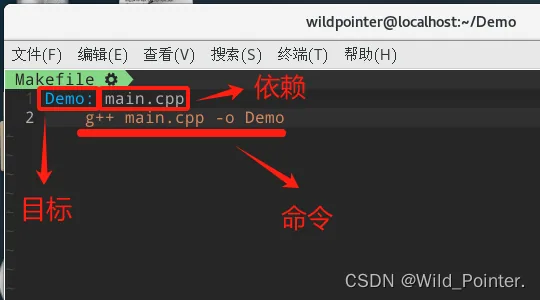
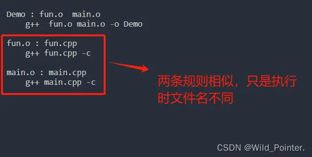
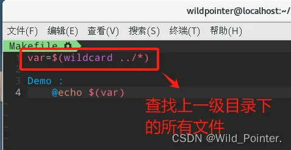
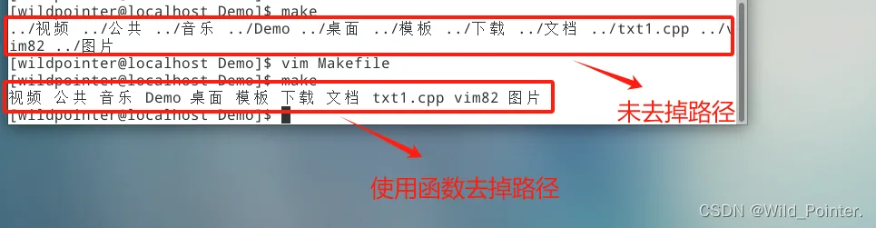

高效工具实战指南：从零开始入门Makefile
摘要：本文介绍了Linux中Makefile的基本概念与使用方法。Makefile通过规则定义编译流程，包含目标、依赖和命令三要素，能实现自动化编译。文章详细讲解了Makefile的执行流程、变量类型（自定义变量、预定义变量、自动变量）、模式匹配（使用%通配符）以及常用函数（wildcard、notdir、patsubst）。此外还补充了伪目标声明和强制执行的技巧。Makefile能有效解决多文件项目的编译管理问题，提高开发效率。

前言
在Linux中编译CPP文件，我们能够使用GCC命令进行编译，但当项目文件多且繁杂的时候，使用GCC命令就会十分的麻烦。那么有没有一个脚本文件能直接处理我们编译的过程，按照我们设置好的编译流程进行文件的编译？这就是Makefile解决的问题。而为了执行Makefile文件，我们还需要使用make命令，用于解释Makefile中的指令的命令工具
Makefile的简单介绍
Makefile是一个文件，通常没有扩展名，包含了一系列的指令和规则，用于指导make工具如何编译和链接程序。在Makefile文件中每个规则可以指定一系列的依赖项和要执行的命令，当你修改了源代码并希望重新编译项目时，make工具会根据Makefile中的规则来决定哪些部分需要重新构建。而Makefile带来的好处是能实现“自动化编译”，一旦写好Makefile，只需要一个make命令，整个项目完全自动编译，极大的提高了软件开发的效率
Makefile文件有以下两种：
1.makefile
2.Makefile
在构建项目的时候在哪个目录下执行构建make命令，则这个目录下的makefile文件就会执行，因此在一个项目中可以存在多个makefile文件，分别位于不同的项目目录中
Makefile中的指令规则
在描述Makefile文件中的规则时，我们先观察下面的图片：
图1.Makefile文件的简单命令
观察上图，我们知道了一个简单的Makefile文件中的规则是由目标，依赖和命令组成的。这些标识具体意义如下：
1.目标：
1.目标和规则中的命令是一一对应的
2.通过执行规则中的命令，生成目标文件
3.规则中可以有多个命令，因此可以生成多个目标
4.伪目标：当执行规则后不生成任何文件
2.依赖：
1.在规则的命令中需要使用的依赖
2.规则的依赖为空，则代表命令不需要任何依赖
3.当前规则中的依赖可以是其他规则中的目标文件
3.命令：
1.当前规则的执行语句，一般情况下是一个shell命令
2.一个规则的命令可以是多个，每个命令前必须有一个Tab缩进并且独占占一行
在了解到Makefile文件中的指令规则的具体组成后，我们还需要知道以下几点：
1.目标与依赖之间以":"为间隔
2.可以存在多个目标和依赖，具体的目标与依赖之间使用","分割或者空格分割
3.每一条命令独占一行，以一个TAB键开头，且一个规则存在多条命令
具体可参考以下Makefile文件示例:
//多个目标文件，多个依赖，多个命令Demo1 Demo2 : main.cpp fun.cpp g++ main.cpp -o Demo1 g++ fun.cpp -o Demo2PS：在Makefile文件中存在自动推导功能，如果依赖没有指明的化，只要当前目录符合编译条件，那么使用make指令都能成功执行Makefile文件
Makefile的执行流程
当我们编写好Makefile文件时，我们需要使用make命令执行当前目录下的Makefile文件，在我们于终端中输入make指令并回车时，会按照以下步骤进行执行：
步骤1：在当前目录查找Makefile文件，存在则执行步骤2，不存在则不执行
步骤2：查看Makefile文件的规则中的依赖文件是否存在，存在则执行命令，不存在则执行步骤3
步骤3：当规则中的依赖文件不存在时，则会遍历Makefile文件中的其他规则，寻找能生成当前依赖文件的规则，并执行
通过以上三个步骤，我们了解了Makefile的大致的执行流程，而当我们重复执行make指令时则不会再通过以上步骤进行执行，而是执行以下几个步骤:
步骤1：查看当前规则的目标文件是否存在，不存在则执行命令，存在则执行步骤2
步骤2：查看当前规则的目标文件和依赖文件的修改时间，如果目标文件修改时间晚于依赖文件则不执行操作，早于依赖文件则执行步骤3
步骤3：当目标文件的修改时间早于依赖文件，即依赖文件在生成目标文件后被修改过，则执行命令更新目标文件
以上便是具体的Makefile的执行流程，当我们执行make指令时，我们还可以指定执行对应的规则，具体示例如下：
//Makefile文件中的内容，存在多条规则Demo1 : main.cpp g++ main.cpp -o Demo1Demo2 : fun.cpp g++ fun.cpp -o Demo2//执行指定的生成Demo2目标文件的规则make Demo2图2.使用make命令执行指定的规则
PS：当规则中存在多个依赖文件时，只要有一个依赖文件被修改，则会执行命令。即如果命令是编译依赖文件生成目标文件的情况，那么执行make命令则会对所有的依赖执行编译，而不是对被修改的依赖文件执行编译，会导致编译时间长
Makefile中的变量类型
在编写Makefile文件时，常常会遇到规则中的命令过于冗长，且重复语句过多的情况，为了解决这些问题，Makefile提供了变量类型。在Makefile中变量类型分为以下几种：
1.自定义变量
在Makefile中使用自定义变量时，需要对变量进行初始化，不能单独声明变量，在使用变量的时候可以使用$来对变量取值（类似于PHP），具体参考以下代码：
#普通写法Demo : main.cpp g++ main.cpp -o Demo #使用自定义变量写法target = Demoreliance = main.cpp$(target) : $(reliance) g++ $(reliance) -o $(target)2.预定义变量
Makefile中的预定义变量是指在Makefile中已经定义的变量，可以直接使用这些变量编写脚本。预定义变量如下表：
| 预定义变量 | 备注 | 默认值 |
| AR | 生成静态库库文件的程序 | ar |
| AS | 汇编编译器 | as |
| ARFLAGS | 生成静态库库文件程序 | 无默认值 |
| ASFLAGS | 汇编语言编译器的编译 | 无默认值 |
| CC | C 编译器 | cc |
| CPP | C 预编译器 | $(CC) -E |
| CXX | C++编译器 | g++ |
| CFLAGS | C编译器的编译选项 | 无 |
| CPPFLAGS | C预编译的编译选项 | 无 |
| CXXFLAGS | C++编译器 | 无 |
| FC | FORTRAN编译器 | f77 |
| FFLAGS | FORTRAN编译器 | 无 |
| RM | 删除文件程序 | rm -f |
表1.预定义变量表
#普通写法Demo : main.cpp g++ main.cpp -o Demo #使用预定义变量写法Demo : main.cpp $(CXX) main.cpp -o Demo 3.自动变量
自动变量在规则执行时自动设置，通常与当前正在处理的目标和依赖项有关，且自动变量只能在规则的命令中使用。以下是几种Makefile中的自动变量：
| 自动变量 | 备注 |
$@ | 表示规则中的目标文件名 |
$< | 表示规则中的第一个依赖项 |
$? | 表示规则中所有比目标新的依赖项 |
$^ | 表示规则中所有的依赖项，不包括重复的 |
$+ | 与 $^相同，但是会包括重复的依赖项 |
$| | 表示规则中所有比目标新的依赖项，不包括目标自身 |
$* | 表示不包含后缀的依赖项或目标文件名 |
$(@D) | 表示目标文件的目录 |
$(@F) | 表示目标文件的文件名 |
表2.自动变量表
#普通写法Demo : main.cpp g++ main.cpp -o Demo #使用自动变量x写法Demo : main.cpp g++ $^ -o $@Makefile中的模式匹配
当Makefile中的规则大多数都只是因为文件不同而添加不同的规则时，我们可以把这些类似的规则写成模板（类似于C++中的模板），以下对Makefile中的模板进行讲解：
1.在Makefile中使用"%"对字符进行匹配(类似于*通配符)
2.以下是一个简单的Makefile文件：
Demo : fun.o main.o g++ fun.o main.o -o Demofun.o : fun.cpp g++ fun.cpp -cmain.o : main.cpp g++ main.cpp -c3.在上述代码中，我们可以发现存在两条规则相似，具体如下如图：

图3.规则相似
4.此时我们可以使用Makefile中的模式匹配，写一个规则对以上类似的规则进行匹配：
Demo : fun.o main.o g++ fun.o main.o -o Demo#模式匹配%.o : %.cpp g++ $< -cPS：一个Makefile文件中可以存在多个模板，当依赖文件不存在时，会对模板进行查询生成文件，当多个依赖符合同一个模板时，则该模板会被执行多次
Makefile中的函数
Makefile中的函数用于在构建过程中执行一些命令，并根据命令执行结果返回相应的值。其中存在两种格式的函数：
1.内置函数：是由 Make 工具提供的一些预定义函数，如shell函数、subst函数、patsubst函数等
2.自定义函数：则是用户根据需要自行定义的函数，可以根据具体情况编写不同的函数来实现自己的需求
具体的在Makefile中使用函数的语法如下：
$(FUNCTION_NAME arguments)UNCTION_NAME为函数名，arguments 为函数的参数在了解了Makefile中的函数后，我们先学习Makefile中的内置函数：
1.wildcard函数：用于展开指定的目录
$(wildcard PATH)PATH代表指定展开的目录
图4.wildcard函数的使用
2.notdir函数：用于去掉文件路径
$(notdir PATH)PATH代表去掉路径的文件
图5.notdir函数的使用
3.patsubst函数：用于替换文件后缀
$(patsubst 更改前的后缀, 更改后的后缀, $(文件)) Makefile补充知识
在第二小节曾说过伪目标，其伪目标是指当执行规则后不生成任何文件。当我们的目标文件为最新的时候，再执行make指令则会提示目标文件为最新，而使用伪目标则可以不提示这警告继续执行make指令。要使用伪目标则需要对目标文件进行伪目标的声明，如下：
.PHONY:Demo #使用.PHNOY将目标文件声明为伪目标Demo : main.cpp g++ main.cpp -o Demo在执行Makefile脚本的时候，可以在规则中指定强制执行命令，如下：
Demo : main.cpp -g++ main.cpp -o Demo#使用"-"号表示该命令强制执行